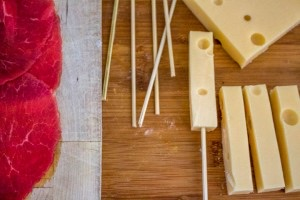
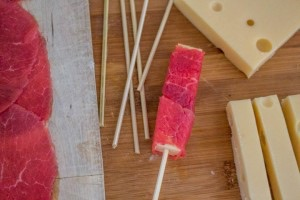
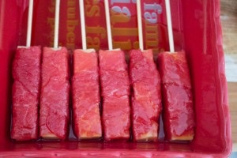
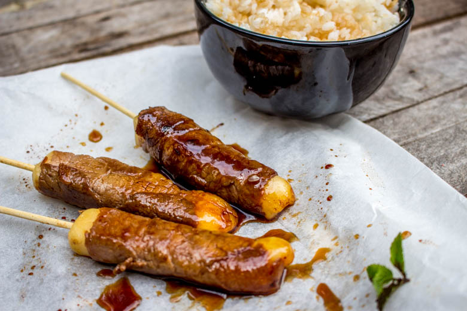
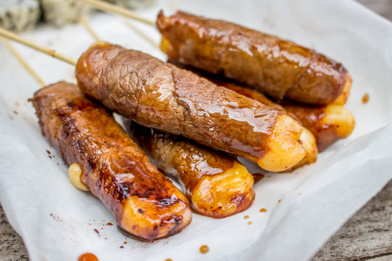

Yakitori au fromage

Après les yakitori au poulet il était normal que je vous présente les yakitori au fromage.
Effectivement, les yakitori au fromage sont mes préférés!! Très souvent dans les restaurants Japonais il m’arrive d’éliminer une des brochettes proposées pour la « switcher » avec une au fromage!
Je me souviendrai toujours de la première fois que j’ai mangé des yakitori au fromage! Je n’osais même pas y toucher car je me demandais ce qu’il pouvait bien y avoir à l’intérieur! En effet, j’avais du mal à concevoir qu’il puisse n’y avoir que du fromage dans un « tube » de viande^^ Depuis ce jour, je ne prends quasiment plus que ça et surtout j’en fais aujourd’hui très très souvent 🙂
Comme je vous ai déjà expliqué dans la recette des yakitori au poulet (recette ici), généralement les yakitori sont des petites brochettes principalement de poulet mais il en existe maintenant un grand nombre de variétés afin de pouvoir les adapter aux us et coutumes de chaque pays dans lesquels les yakitori sont désormais servis.
Ces petites brochettes peuvent être servis en apéro, mais moi je préfère les faire lors d’un repas aux accents Japonais avec un bol de riz blanc en accompagnement.
J’ai cru comprendre que beaucoup d’entre vous avez particulièrement aimé mes premiers yakitori, alors j’espère qu’il en sera de même avec ceux-la!!
Trêve de bavardage place à la recette!
Ingrédients
- Carpaccio de boeuf - 200g
- Emmental - 250g
- Pics à brochettes de 15cm - 12
- Sauce yakitori
Instructions
- Couper le fromage en rectangles d'environ 7cm (pour des pics à brochettes de 15cm)
- Faire glisser doucement le fromage le long du pic à brochette (il faut que le pic soit bien au centre du fromage afin de faciliter la cuisson)
- Entourer le fromage de carpaccio. Selon la taille du fromage et de la brochette il sera peut être nécessaire d'utiliser 2 tranches de carpaccio pour une brochette (moi j'utilise environ 1,5 à 2 tranches de carpaccio par brochettes)
- Placer toutes les brochettes dans un plat
- Badigeonner toutes les brochettes de la sauce yakitori
- Laisser mariner au frigo pendant 30 minutes
- Dans une poêle faire revenir les yakitori de chaque côté (environ 2-3 minutes par brochettes) Attention elles cuisent vraiment rapidement, il faut faire attention à bien tourner la brochette sur chaque face pour qu'elle puisse avoir la même couleur partout. N'oubliez pas de bien nettoyer votre poêle entre chaque brochette pour éviter de mettre des résidus calcinés sur la brochette suivante.
- Edit: Vous pouvez également passer les yakitoris au fromage au four une dizaine de minutes à 180° mais surveillez constamment la cuisson car elles cuisent très très vite et il faut les sortir au bon moment pour se régaler ! Dès que le fromage se met à fondre, c'est le moment de les sortir 🙂





Les tips de la communauté
Grand succès avec 56 commentaires enthousiastes. Les yakitori au fromage séduisent par leur originalité culinaire et suscitent beaucoup d'intérêt pour les techniques de préparation.
Astuces
- Utiliser un fromage qui fond bien comme le fromage frais
- Enfiler délicatement sur les brochettes pour éviter qu'elles ne se cassent
- Bien cuire les yakitori à la poêle pour dorage optimal
Variantes suggérées
- Remplacer le fromage par d'autres ingrédients comme des champignons ou des crevettes
- Ajouter des sauces japonaises variées
Ajustements signalés
- ce week-end et je me lance !!
- pour en faire au menu de ce soir ;))) merci !